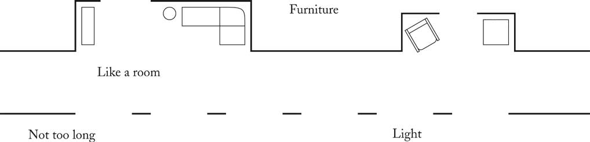

Short Passages Pattern
Solution
Keep passages short. Make them as much like rooms as possible, with
carpets
or wood on the floor, furniture, bookshelves, beautiful windows. Make
them
generous in shape and always give them plenty of light; the best
corridors
and passages of all are those which have windows along an entire wall.
